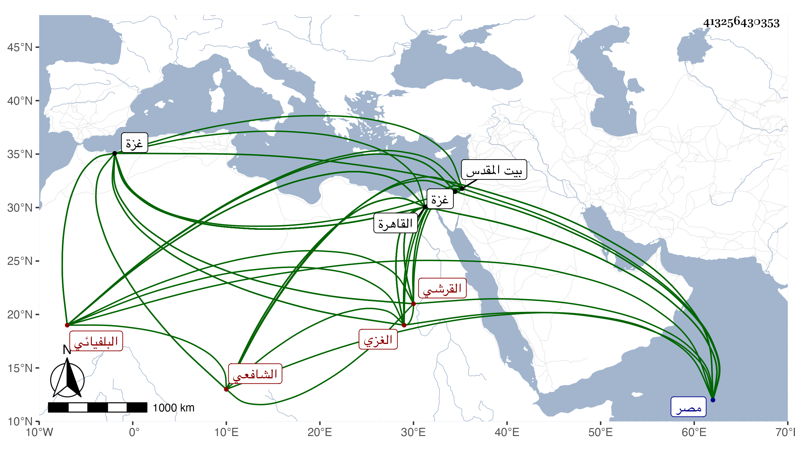

0902Sakhawi.DawLamic.ITO20230111-ara1.EIS1600.413256430353
Biography ID: 413256430353
117
علي بن موسى بن إبراهيم بن حصن بمهملتين ونون بن خضر الدولة القرشي البلفيائي ثم الغزي الشافعي ويعرف بالكتاني بالمثناة ولد سنة سبعين وسبعمائة بقرية بلفيا بكسر الموحدة واللام ثم فاء ساكنة بعدها تحتانية من ريف مصر ثم انتقل به أبوه إلى غزة فقرأ بها القرآن وحفظ العمدة والمنهاج الفرعي والورقات لإمام الحرمين والملحة وعرضها على جماعة منهم محمد بن طريف بالمهملة مكبر ، وأخذ الفقه عنه وعن البرهان بن زقاعة والعلاء على بن نعامة قاضي الشافعية بها وسمع علي الحديث وكذا أخذ عن ابن طريف ... الأصول ، ثم ارتحل إلى القدس فأخذ به النحو عن المحب بن الفاسي والبدر العليمي وغيرهما ولما تحول شيخه ابن زقاعة إلى القاهرة وتوطن بها طلبه من غزة فقدم عليه ولازم خدمته إلى أن مات الشيخ بحيث عرف بخدمته واستقر في خدمة الباسطية بالقاهرة ، وحج بأخرة من القاهرة في سنة اثنتين وأربعين وجاور وتلا بالعشر على الزين بن عياش بما تضمنه نظمه في الثلاثة والشاطبية ، وكان جيد الذهن ذا نظم كثير وفضيلة ومشاركة في العلوم واستحضار للكثير من علوم شتى مع شجاعة واعتناء بفنون الحرب . مات بالقاهرة في يوم السبت سابع عشر شوال سنة تسع وأربعين بعد أن اختلط من قبيل رمضان سنة ست وصار ملقى لا يعي شيئا رحمه الله وإيانا .
